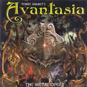

| Artist: | Avatansia |
| Title: | The Metal Opera |
| Label: | AFM Records 0046722AFM |
| Length(s): | 59 minutes |
| Year(s) of release: | 2000 |
| Month of review: | [02/2001] |
| 1) | Prelude | 1.11 |
| 3) | Serpents In Paradise | 6.15 |
| 4) | Malleus Maleficarum | 1.43 |
| 5) | Breaking Away | 4.34 |
| 7) | The Glory Of Rome | 5.28 |
| 8) | In Nomine Patris | 1.04 |
| 10) | A New Dimension | 1.39 |
| 11) | Inside | 2.24 |
| 12) | Sign Of The Cross | 6.24 |
| 13) | The Tower | 9.43 |
Malleus Maleficarum is a short, atmospheric piece that works out really well. Good melody as well. The follow-up is again an accessible, but fast tune called Breaking Away. This track is more AORish, and is catchy in a good way. For proggers this is probably too monotonous.
After a strong start on the folky Farewell we get a singalong chorus followed by a good performance of Sharon Den Adel (of Within Temptation, who seems to be singing everywhere right now). The Glory Of Rome signifies a return to pacey metalguitars. The title track is like a manifesto and is one of the better poppy/pompous sounding metal tracks, because of the good vocal melody.
Inside comes after the classical/melodious interlude A New Dimension, and is a very weak ballad. The album ends in a good way with the duo Sign Of The Cross (pompous and catchy reminding me of Europe in their heydays) and the finale The Tower. This track of almost ten minutes has some intensifying ingredients (the synth violins in the beginning) and some good vocals parts at the end. Poppy, but again it works. The guitar solo however does not fit here at all.
As regards the vocals: these are for the most part typical metal vocals, and actually I do not hear that much difference between the various singers (with a few exceptions like Andr´ Matos.
There will be a follow-up to this album, concluding the story as told on the album. Although the music follows the fantasy, a more detailed rendition can be found in the booklet.